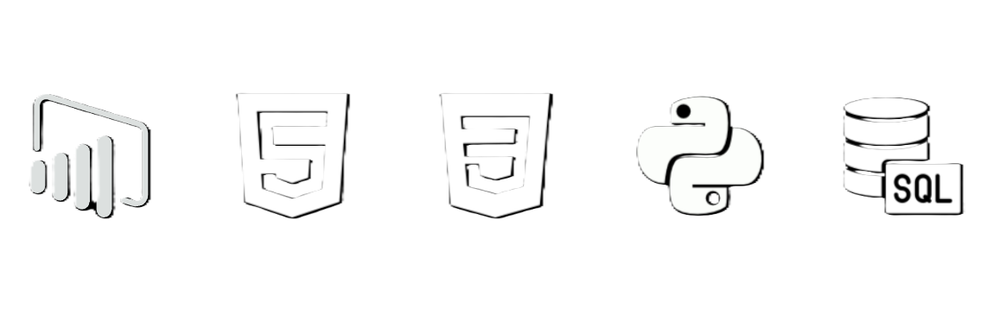

Hello
I'm Jonathan Lopes
Software Engineer
Um estudante de Engenharia de Software, apaixonado por tecnologia, Analista de Dados Trainee, convertendo dados em insights que ajudam na tomada de decisões.
SOBRE
Atualmente moro no Brasil e atuo como Analista de Dados Trainee na Vitopel do Brasil, transformando dados em insights que ajudam na tomada de decisões. Meus projetos envolvem limpeza, modelagem e visualização de dados com a criação de dashboards interativos.
Curioso por natureza e movido por desafios. Estou sempre buscando aprender novas ferramentas e metodologias que me ajudem a evoluir como desenvolvedor.
EDUCAÇÃO
ETEC - Elias Miguel Junior
2015 – 2018
Ensino Técnico Logística
EBAC
2024 – 2024
Análise de Dados
EBAC
2024 – 2025
SQL para Análise de Dados
Uninter - Centro Universitário Internacional
2025 – Atual
Bacharelado em Engenharia de Software
LINGUAGENS

PROJETOS E EXPERIÊNCIA
Autônomo
Dez 2024 – Dez 2024
Back and
Desenvolvimento de um script em Lua que permite realizar zoom digital automático em tempo real no OBS Studio, melhorando a captura de vídeo durante apresentações e transmissões ao vivo.-
Freelancer R2 Multimarcas
Abril 2025 – Mar 2025
DBA
Criação e implementação de um banco de dados em MySQL para gerenciar e otimizar o estoque e vendas da loja multimarcas.
Vitopel do Brasil
Jan 2025 – Atual
Analista de dados Trainee
Auxílio na coleta, organização e análise de dados para gerar insights estratégicos. Suporte na criação de dashboards, relatórios e visualizações, utilizando ferramentas como Excel, Power BI ou Python.